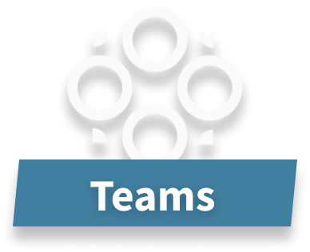
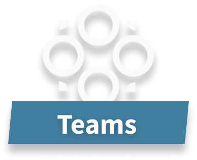

CONNECTING LIKE-MINDED GAMERS, WITHOUT THE HASSLE
FIND NEW BUDDIES, JOIN TEAMS, TOURNAMENTS, AND BROWSE ALL GAMING RELATED CONTENT
OR LOGINFIND NEW BUDDIES, JOIN TEAMS, TOURNAMENTS, AND BROWSE ALL GAMING RELATED CONTENT
OR LOGIN 



A ton of irrelevant content
No filtering capabilities
When you finally find a match and there's no synergy, you have to start over.
No regard for toxicity
No all-in-one solution for everything in gaming
They don't match based on humor and personal preferences
Scrolling through forums and group pages takes time.
When you finally find a match, it's rarely a good one. You've wasted your energy losing games, just to find out there is no synergy.
Now you have to do it all again.

We use this information to generate matches based on personal preferences and humor
This data is used to connect you with others playing the same game, based on skill level
This feature automatically displays the most optimal GamingBuddies based on your profile, to ensure the best possible matches

Create a team with your buddies, participate in tournaments or battle other teams in scrims

Providing a software that connect like-minded gamers makes gaming more fun and it lowers toxicity. GamingBuddy is founded by 4 gamers all of which were frustrated off the lack of opportunity to grow one’s network of gamers but also being met by toxic gamers and the fact that the issue has grown bigger day by day. We stand against toxicity and we want to break the cycle of what stimulates toxicity in the gaming community. Therefore we do several actions to achieve our ambition: Our level-system is designed to stimulate good behaviour, gamers can commend gamers who has a positive attitude. In short, we design our software to make a more fun and engaged gaming community. We also host events, physical and online, with wholesome stakeholders who wants to create a better gaming community